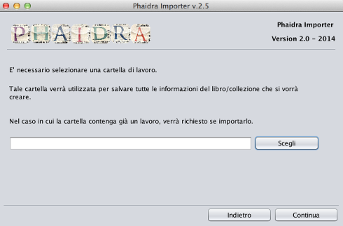

Cartella di lavoro
- Mediante questa interfaccia è possibile definire il percorso della cartella di lavoro, ovvero la cartella contenente le immagini da caricare sul server.

- Cliccando sul pulsante "scegli" comparirà l'interfaccia di selezione della cartella di lavoro, seleziare la cartella per proseguire con la creazione dell'oggetto digitale.
Selezionata la cartella verrà visualizzata un'interfaccia in base alla tipologia di cartella selezionata
- Caso 1: La cartella selezionata non contiene un oggetto digitalizzato in precedenza, in questo caso verrà richiesto se creare un oggetto "Libro" o "Collezione"
- Caso 2: La cartella selezionata contiene un oggetto digitalizzato in precedenza, in questo caso verrà richiesto se importare la struttura salvata precedentemente e i metadati.